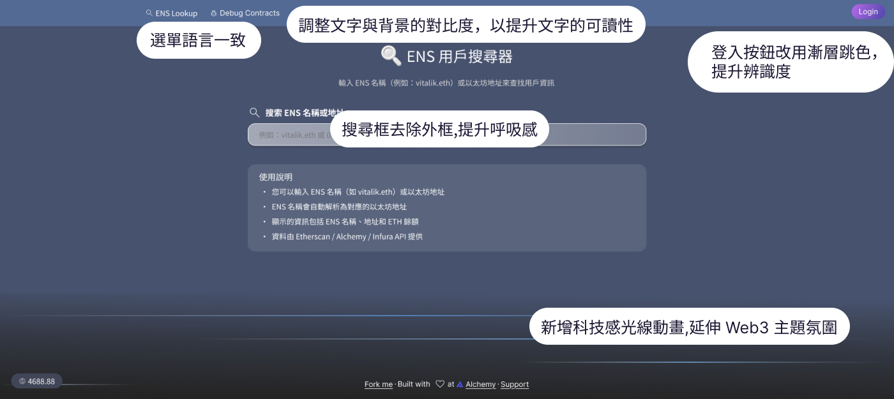

<!DOCTYPE html>
<html lang="en">
<head>
    <meta charset="UTF-8">
    <meta name="viewport" content="width=device-width, initial-scale=1.0">
    <title>ESC搜尋網</title>
</head>
<body>
    
</body>
</html><!DOCTYPE html>
<html lang="en">
<head>
    <meta charset="UTF-8">
    <meta name="viewport" content="width=device-width, initial-scale=1.0">
    
    <link rel="preconnect" href="https://fonts.googleapis.com">
    <link rel="preconnect" href="https://fonts.gstatic.com" crossorigin>
    <link href="https://fonts.googleapis.com/css2?family=Indie+Flower&family=Josefin+Sans:wght@100&family=Knewave&family=Pacifico&family=Rubik+Broken+Fax&display=swap" rel="stylesheet">

    <link rel="preconnect" href="https://fonts.googleapis.com">
    <link rel="preconnect" href="https://fonts.gstatic.com" crossorigin>
    <link href="https://fonts.googleapis.com/css2?family=Bagel+Fat+One&display=swap" rel="stylesheet">

    <link
    href="https://cdn.jsdelivr.net/npm/bootstrap@5.3.0-alpha3/dist/css/bootstrap.min.css"
    rel="stylesheet"
    integrity="sha384-KK94CHFLLe+nY2dmCWGMq91rCGa5gtU4mk92HdvYe+M/SXH301p5ILy+dN9+nJOZ"
    crossorigin="anonymous"
    />
    <link rel="stylesheet" href="../css/escLookup.css" />
    <title>Mina Portfolio</title>
</head>
<body>
    <nav class="navbar navbar-expand-md fixed-top">
        <div class="container">
          <a href="https://megumilin.github.io/minaPortfolio/index.html" class="navbar-brand logo py-3">Mina</a>
        </div>
      </nav>


          <div class="banner d-flex justify-content-center">
            <div class="row">
            <div class="col-12 col-md-12 text-center">
            
            </div>
          </div>
          </div>

          <div class="container mt-5">
            <div class="row g-0">
                <div class="col-md-2 col-2"></div>
                <div class="col-md-8 col-10 mx-5">
                  <h2 class="my-2 fw-bold">專案背景:</h2>
                    <P class="my-2">類型：Web3 工具優化<br>原始開發者：區塊鏈工程師PY Chou&emsp;&emsp;<br>
                          此專案原為區塊鏈工程師PY Chou開發的ENS 用戶搜尋工具，功能簡易。
                          PY Chou反應整體介面風格太像 AI 生成畫面。因此我重新設計了深色模式的視覺介面。<br>
                          在分析過程中，我發現原專案採用 Bootstrap 12 欄網格系統，因此在 Redesign 時保持原有格局，只做必要調整，以優化使用者體驗與視覺風格。
                        </P>
                    <h2 class="my-2 fw-bold">網站的實際用途：</h2>
                    <p class="my-2">
                        開發者或使用者查地址歸屬：例如想知道這個 .eth 名稱是誰的。<br>
                        交易或社交平台的驗證輔助：確認對方是不是假帳號（避免釣魚詐騙）。<br>
                        區塊鏈愛好者工具：方便查 ENS 狀態或餘額。</p>
                         <h2 class="my-2 fw-bold">目標使用者：</h2>
                         <p class="my-2">
                        想查 .eth 名稱的開發者、投資者、NFT 玩家<br>
                        對 ENS 有基本概念的一般使用者<br>
                        </p>
                        <h2 class="my-2 fw-bold">使用情境：</h2>
                        <p class="my-2">
                        使用者突然在推特看到一個「vitalik.eth」或「0xABCD...」，想知道這是誰、地址正不正確、錢包有沒有錢。<br>
                        任務流程簡短，所以「搜尋速度」「資訊可讀性」「信任感」是三大關鍵。<br>
                        </p>  
                </div>
          </div>

            <div class="container">
                <div class="row photo d-flex justify-content-center">
                  <h1 class="my-4 fw-bold">優化視覺與使用者體驗</h1>
                    <div class="col-12 col-md-12 text-center my-2">
                    
                   </div>
                </div>
              </div>


          <div class="container mt-5">
               <div class="row g-0">
                   <div class="col-md-2 col-2"></div>
                   <div class="col-md-8 col-10 mx-5">
                   <h2 class="my-2 fw-bold">1. 搜尋行為簡化 → 降低摩擦、提升任務完成率</h2>
                    <p class="my-2">
                      讓使用者能直接按 Enter 搜尋、並自動清空輸入欄位，這就是在移除操作摩擦（Friction）。<br>
                      使用者完成一件事越流暢，他越願意繼續使用系統。<br>
                      在搜尋型產品裡，「多一步點擊」就足以讓部分使用者中途放棄。這一點，會直接反映在搜尋量與互動深度提升上，也就是早期轉換行為。<br>
                      </p>
                  <h2 class="my-2 fw-bold">2.提升信任與專業感</h2>
                  <p class="my-2">
                      因為太「AI 感」的畫面會讓人潛意識懷疑產品品質或安全性。<br>
                      改成留白多的設計，會讓人看了舒適、更願意嘗試互動。<br>
                      心理層面上，這能提升「感知可用性（Perceived Usability）」，而這在許多實驗裡都與轉換率正相關。<br>
                 </p>
                 <h2 class="my-2 fw-bold">3.Fitts’s Law：目標明顯＝操作更快</h2>
                 <p class="my-2">
                 目標越顯眼、越容易被指向與點擊。如果漸層按鈕比不顯眼顏色的版本多出 0.3 秒被注意到，那轉換率提升就可能是實質的數據差異。
                 漸層跳色登入按鈕 = 提升可見性與行動導向，有機會提升轉換率。
                 <br>
                 </p>  
              </div>
         </div>

              <div class="container">
              <div class="row photo d-flex justify-content-center">
              <!-- <h1 class="my-4 fw-bold">優化視覺與使用者體驗</h1> -->
              <div class="col-12 col-md-12 text-center my-2">
              
              </div>
            </div>
          </div>

           <div class="container mt-5">
            <div class="row g-0">
              <div class="col-md-2 col-2"></div>
              <div class="col-md-8 col-10 mx-5">
                <h2 class="my-2 fw-bold">1. 即時資訊顯示 → 增強信任與決策效率</h2>
                <p class="my-2">
                  讓 ETH 餘額即時顯示對應台幣，這不只是方便，還是信任感設計（Trust Design）。<br>
                  用戶不用再懷疑「這數字到底值多少」，心裡的阻力就降低。<br>
                  換句話說，用戶更容易往下一步行動。<br>
                  這是極典型的「降低認知負荷（Cognitive Load）」而提升轉換率的操作。<br>
                </p>
                <h2 class="my-2 fw-bold">2.歷史紀錄功能 → 增加回訪率</h2>
                  <p class="my-2">
                   這等於在設計黏著機制（Retention Loop）。<br>
                  歷史紀錄不只方便重查，還讓人覺得這平台「記得他」。<br>
                  一旦使用者有重訪理由，轉換率就不是短期衝刺，而是長期堆高。<br>  
                 </p>
                <h2 class="my-2 fw-bold">改動綜合效果是——減少猶豫、增加信任、強化持續使用</h2>
                <p class="my-2">
                    這三個都是轉換率的推進器。<br> 
                    如果這是商業產品（例如 ENS 延期、購買或錢包登入等後續操作），這些改善確實能間接帶來轉換成長。<br> 
                    不過，真正的成效要靠後台數據（如完成搜尋數、回訪率、點擊登入率）驗證。<br> 
                    Redesign 版本透過互動流程與視覺層級的微調，讓整體介面更直覺、資訊更清晰，並強化使用者對產品的信任感。<br>
                     搜尋流程變得更順暢，登入與互動行為也更具焦點導向。    
                </p>                                                        
            </div>
        </div>
          
          <h1 class="my-4 fw-bold">開發流程</h1>
          <div class="container comment my-4">
            <div class="row">
              <div class="col-12 col-md-6 my-5">
                <div class="card commentCard">
                  <div class="header d-flex justify-content-center">
                    <div class="box"></div>
                    
                  </div>
                  <div class="card inside">
                    <h6 class="pt-5 fw-bold">UIUX</h6>
                    <span class="borderBottom"></span>
                    <div class="p-5 skill">
                        <ul>
                            <a href="https://www.figma.com/design/2t0AGMoQvhPe4fYlXu8F5j/ENS-%E7%94%A8%E6%88%B6%E6%90%9C%E5%B0%8B%E5%99%A8?node-id=0-1&m=dev&t=ZI5sn1ylTwkxaVHm-1" target="_blank" class="btn">設計稿</a>
                        </ul>
                    </div>
                  </div>
                  <div class="py-3"> </div>
                </div>
            </div>

              <div class="col-12 col-md-6 my-5">
                <div class="card commentCard">
                  <div class="header d-flex justify-content-center">
                    <div class="box"></div>
                    
                  </div>
                  <div class="card inside">
                    <h6 class="pt-5 fw-bold">原始專案</h6>
                    <span class="borderBottom"></span>
                    <div class="p-5 skill">
                        <ul>
                            <a href="https://github.com/yoyoj1023/dapps/tree/main/09-sa-ens-searcher" class="btn" target="_blank">Github</a>
                            <a href="https://ens-reachme.vercel.app/ens-search" class="btn" target="_blank">Demo</a>
                        </ul>
                    </div>
                  </div>
                    <div class="py-3"> </div>
                </div>
              </div>
            </div>
          </div>
        </div>
          
         <footer class="container-fluid">
         <h1 class="pt-2 pb-2 fw-bold text-black">謝謝觀看</h1>
         <h1 class="pb-4"><a href="https://megumilin.github.io/minaPortfolio/"  class="btn">回首頁</a></h1>
         </footer>   
         
                
</body>
</html>


